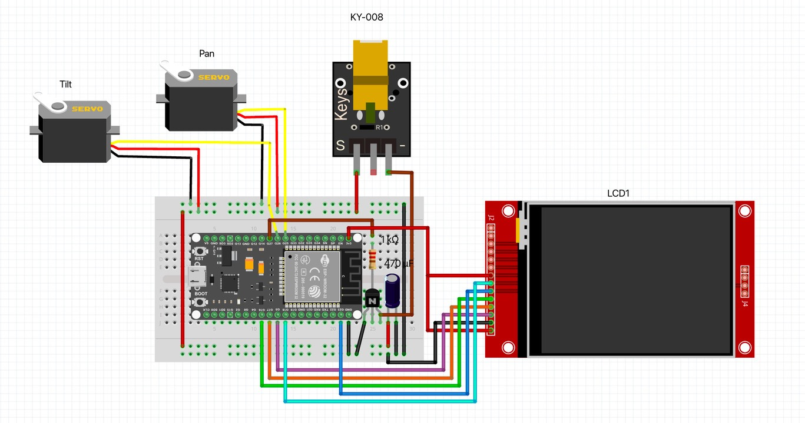
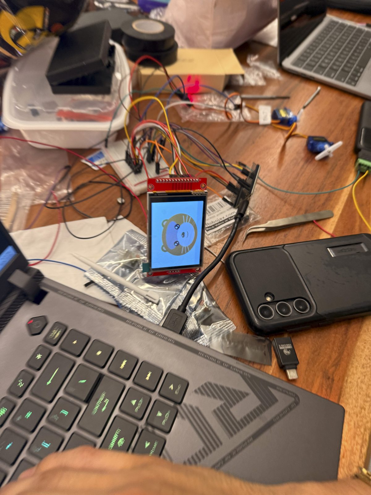
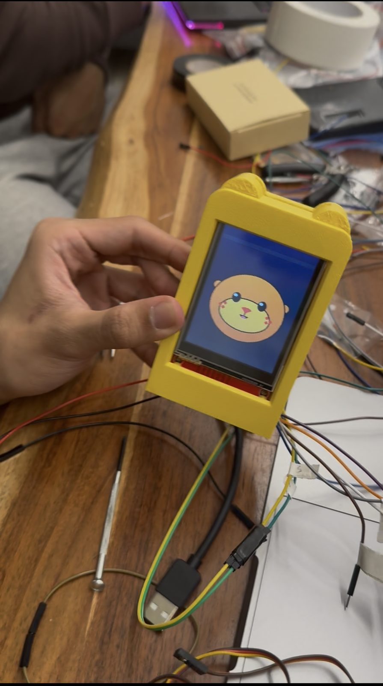
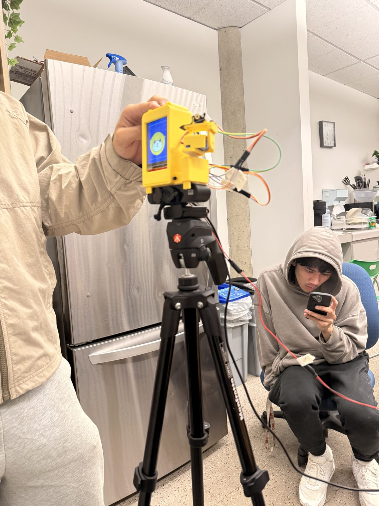

Otter Tutor
It sees your mistake. It won't tell you the answer.
A desk robot that watches you solve calculus on a whiteboard, points a laser at the line where it went wrong, and lets you fix it yourself.
Hmm, take another look at which rule you picked when you took the derivative on line 2.
Real hardware. Built overnight.
Spec sheet
| Display | 2.8" ILI9341 · 240×320, portrait |
|---|---|
| Moods | 6: idle, listening, thinking, talking, happy, confused |
| Arm | 2× SG90 · pan ±60°, tilt −25° to +15°, eased at up to 150°/s |
| Pointer | Red laser. Aims first, then lights for 4 s. The firmware cuts it at 6 s. |
| Eyes | 2K USB webcam, read at 1920×1080 |
| Ears | The laptop's own mic, tap to talk. Never the webcam mic. |
| Voice | ElevenLabs on the laptop speakers, lip-synced on the screen |
| Brain | Laptop (Python, FastAPI). The ESP32 joins it over a Wi-Fi WebSocket. |
| If the link drops | Laser off, head back to center, face to idle |
How it's wired.
One ESP32 runs everything on the robot: two servos, the laser and the screen. Point at a number to see its pins.
Fig. 3 · Wiring diagram

Pin map, from our firmware
| # | Part | ESP32 pin | What it does |
|---|---|---|---|
| 1 | ESP32 DevKit | — | Runs the face, servos and laser. Joins the laptop over Wi-Fi. |
| 2 | Pan servo (SG90) | GPIO 25 | Turns the head ±60° left and right. |
| 3 | Tilt servo (SG90) | GPIO 26 | Tilts from −25° to +15°, so the laser stays below eye level. |
| 4 | Laser (KY-008), NPN, 1 kΩ | GPIO 27 | The pointer. The firmware turns it off after 6 s. |
| 5 | 2.8" ILI9341 screen | MOSI 23 · SCLK 18 · MISO 19 · CS 5 · DC 16 · RST 17 | The otter's face, over SPI, portrait 240×320. |
| 6 | 470 µF capacitor | Power rail | Sits across the breadboard's power rail. |
The diagram shows the transistor version from our wiring guide. On the final robot the laser runs straight from GPIO 27, active-low.
It's 1 a.m. Line 3 is wrong. You can't see why.
So you snap a photo, an app hands you the full solution, and you copy it down. It feels like progress. Then the quiz shows up, and there's no app on the quiz.
Getting the answer isn't the same as finding it.
Photo solvers
Answer in two seconds. Learning in zero.
Chatbots
Ask for a hint, get the whole solution.
Answer keys
They tell you that it's wrong, not where.
Your turn. Pick a line 2.
Find d/dx [x² · sin x]. Choose what you'd write next.
Watching the board…
Choose your line 2
What the otter did
Waiting for your line 2| Verdict | Pick a line 2 above |
|---|---|
| First nudge | Nothing yet |
| Second hint |
Only if you keep going with the mistake
|
| It did | Nothing yet |
| It knew, but didn't say |
|
Built from the robot's real templates. Notice what it never says. Confidence values are examples, and the wait is shortened: a real check takes a few seconds while Gemini reads the board.
Quiet until it's sure.
-
Step 1
It watches. A 2K webcam films the board. OpenCV, in C++, finds the whiteboard, flattens it to a straight-on view and makes the ink stand out.
-
Step 2
It waits. A check starts only when something new is on the board and nothing has moved for 5 s. At most one check every 5 s.
-
Step 3
Gemini reads every line. Each line becomes LaTeX with a verdict: ok, wrong rule, misapplied, arithmetic or unclear. It boxes the first wrong line. If one model is unsure, the next one is asked.
-
Step 4
SymPy re-checks the math. If it can parse the flagged line and finds it's actually correct, the flag is dropped.
-
Step 5
The policy decides. It speaks only at confidence 0.70 or higher, once per mistake, at most every 20 s. Half-written lines and unclear ones are never spoken about.
-
Step 6
It points and speaks. The box becomes pan and tilt through 4 calibrated corners. The laser aims, then lights for 4 s, while ElevenLabs says the nudge and the otter's mouth follows the audio.
What you were doing, and the line.
“Check how you took the derivative on line 1.”
The exact part of the line. Only if you ask again, keep writing with the mistake still there, or nothing on the board moves for 60 s. Then it stays quiet about that mistake.
“Look at what happened to the x when you took the derivative on line 1.”
The rule's name, the method, a corrected step, or the answer. A word filter checks every line before it's spoken. If a line fails, a safe fixed sentence replaces it.
Tap to talk on the laptop's mic. It listens until you pause for about a second, ElevenLabs transcribes you, and Gemini answers while looking at the board. Small talk and concepts in plain words are fine. Ask about your mistake and it answers by the same rules, with the laser on that line.
System status
| Confidence to speak | 0.70 |
|---|---|
| Board still before a check | 5 s |
| Between spoken nudges | 20 s |
| Second hint if nothing moves | 60 s |
| Laser on per flag | 4 s |
| Laser safety cut-off | 6 s |
| Answers given | 0 |
Rules it lives by
- Name the line, never the fix.
- One nudge, one hint, then quiet.
- A false alarm is worse than a miss.
- The laser stays below eye level.
From breadboard to tripod.
-
Step 1 · Breadboard

First boot. The colors came out inverted.
-
Step 2 · Printed case

The first printed case, ears included.
-
Step 3 · Tripod

First full test on the tripod.
What broke, and what we did about it.
20req / day
Gemini's free tier gave us 20 requests a day. We built key rotation, model fallbacks, and a cached demo run.
0collisions
The first arm swung straight into its own body. We tested every angle in CAD until nothing collided.
1veto
The AI sometimes flagged correct work. Now a math engine has veto power.
Stack
- Gemini API
- ElevenLabs
- OpenCV (C++)
- SymPy
- Python + FastAPI
- ESP32
- WebSocket
- Bambu Lab printing
-
Chris
The brain
Gemini vision, the SymPy check, the nudge policy and the laptop server.
-
Sebas
CAD + printed body
Designed and printed the body and the arm, and wired a lot of the electronics.
-
Leandro
Hardware
Electronics, wiring and firmware.
-
Allen
Hardware
Electronics, wiring and firmware.